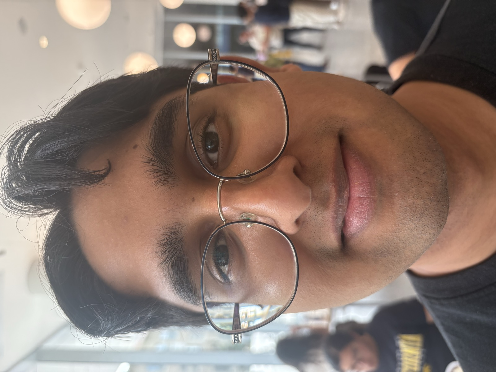
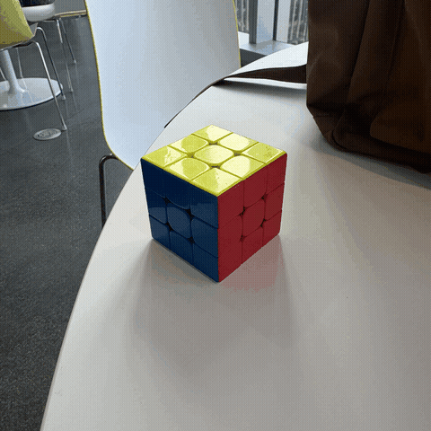

Part 1: Selfie — The Wrong Way vs. The Right Way
Here I took two photos of my good friend Ashwin Bardhwaj (who is single and ready to mingle!).
The first photo is of him close up without zoom (chud photo), while the second is of him far away and zoomed in (chad photo). The close up photo shows more
of Ashwin's curvature in the face, making things in the center of the image (like his nose) appear bigger. The far away image makes the face flatter, and
allows for more of the side features of the face to be seen (like the ears).
|
|

Close up (the wrong way)
|
Stepped back & zoomed in (the right way)
|
Part 2: Architectural Perspective Compression
Here I took two photos of the wonderful Wheeler Hall. The first image is of Wheeler far away but zoomed in to fit the frame.
The second image is closer up without any zoom. In the far away image, the features of the building's facade are flatter, while
the close-up image shows more depth in the facade, with an example being the spacing between the pillars and windows being more
pronounced.
|
Far away, zoomed in (compressed)
|
Walked up, no zoom
|
Part 3: The Dolly Zoom
To create the "dolly zoom" affect for my Rubik's Cube, I took multiple photos at different distances away from the cube,
and zoomed each photo so that the cube was the same size in all of them. This gives the affect of the cube staying in the
same place, while the background zooms in and out. I think I could get a better result if I was more precise in how I moved
my camera so that it stayed in a straight line.
|
|

Dolly zoom animation
|
|